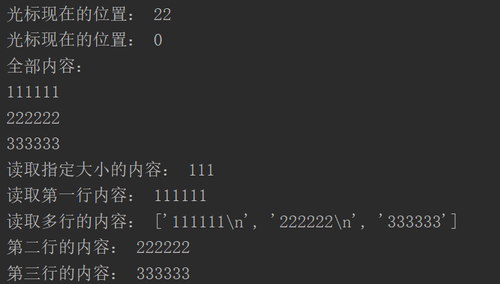

原文连接:https://www.cnblogs.com/jiyu-hlzy/p/11766132.html
- 文件的打开与关闭，写入与读取
- with...as...的用法
- os.path.join 路径的拼接
- IO流，OS模块
文件基本操作
打开/关闭 文件
打开文件： f = open( file_path , 'r') 如果打不开文件，在后面加个encoding改为UTF-8
文件路径用相对路径和绝对路径都可以，前面加个 r 取消转义，返回的是一个文件对象
关闭文件： f.close() 文件在关闭的时候就会自动保存
文件打开的模式
r 以只读方式打开文件,文件指针默认放在文件开头,文件不存在则报错
r+ 打开一个文件用于读写，文件指针默认放在文件开头,文件不存在则报错
w 打开一个文件只用于写入,如果该文件已存在则将其覆盖,如果不存在,创建新文件
w+ 打开一个文件用于读写,如果该文件已存在则将其覆盖,如果不存在,创建新文件
a 打开一个文件用于追加,如果文件已存在,文件指针会放在文件结尾,(也就是说,新的内容将会被写到已有内容之后)如果不存在,创建新文件进行写入
a+ 打开一个文件用于读写,如果文件已存在,文件指针会放在文件结尾，文件打开时会是追加模式，如果不存在，创建新文件用于读写

其他模式：rb rb+ wb wb+ ab ab+
加个b的作用：以二进制的格式打开文件，进行上述操作
读取/写入 文件
f. tell () 获得光标位置
f. seek() 调整光标位置
f. read () 读取指定大小的内容
f. readline() 读取一行的内容
f. readlines () 读取多行内容 返回一个列表

f. write (字符串) 写入多行的时候需要自己加换行符写入内容
f. writelines(序列) 字符串、list、tuple都是序列
f. flush() 立即刷新缓冲（保存）
StringIO与BytesIO
在内存中模拟一个文件
创建 io.StringIO() io.BytesIO()
取值 .getvalue()
注意！ 内存假文件一旦关闭，数据消失
上下文管理器
open 相当于上文 close相当于下文
with as 会自动关闭文件，不用每次都去写close，能同时管理多个文件的关闭
with open() as f1 , open() as f2:
OS模块（需要用的时候再查）
目录及文件操作
显示当前路径：os.getcwd() 展示当前目录内容：os.listdir(path) 改变当前路径： os.chdir(path)
创建目录： os.mkdir(文件名) 删除目录： os.rmdir(文件名) 删除文件： os.remove(文件名)
重命名： os.rename（"oldname","new"）
使用Linux命令： os.system()
路径操作
路径拼接： os.path.join(path1,path2….)
所在目录 / 父级目录： os.path.dirname(path)
绝对路径： os.path.abspath(path) 相对路径： os.path.relpath(path) 基本短路径： os.path.basename(path)
资源大小： os.path.getsize(path)
资源时间： os.path.getctime(path) /创建 getatime(path) / 访问 getmtime(path) /修改
路径是否存在： os.path.exists(path)
是否是目录： os.path.isdir(path) 是否是文件： os.path.isfile(path) 是否是绝对路径： os.path.isabs(path)
遍历某个目录的所有内容，如果是文件夹就继续编历文件夹里的内容